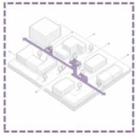
Percorrer
A diretriz de percorrer está relacionada à melhoria das condições de deslocamento a pé e de conexão entre os diferentes equipamentos, bairros e espaços públicos do setor.
Monografia, p. 104Estudo preliminar / Belo Horizonte / 2026
na Av. Presidente Antônio Carlos e Entorno em Belo Horizonte/MG
Esta pesquisa tem como objetivo principal identificar e propor diretrizes de qualificação urbanística para a Avenida Presidente Antônio Carlos, visando transformá-la de apenas um eixo predominantemente viário em um espaço de permanência, que priorize a escala humana, o meio ambiente e a integração com o sistema de transporte coletivo.
Introdução, p. 13Diante disso, busca-se analisar a avenida, a partir de conceitos gerais abordados pelas leituras, visto que, a coleta de dados de campo se estruturou, principalmente, a partir da realização de trajetos diários, por toda a avenida, com o objetivo de capturar a diversidade de suas dinâmicas, seus potenciais e fragilidades através da observação e da experiência pessoal.
Monografia, p. 40Avenida Presidente Antônio Carlos e entorno em Belo Horizonte/MG

A diretriz de percorrer está relacionada à melhoria das condições de deslocamento a pé e de conexão entre os diferentes equipamentos, bairros e espaços públicos do setor.
Monografia, p. 104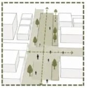
A criação e a qualificação de espaços de lazer buscam ampliar as possibilidades de permanência e convivência no entorno da Avenida Antônio Carlos.
Monografia, p. 104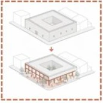
A modificação do uso considera o potencial de transformação de espaços e estruturas existentes que apresentam baixa utilização ou não contribuem plenamente para a dinâmica urbana do entorno.
Monografia, p. 105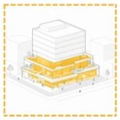
A diversificação dos usos busca ampliar a variedade de atividades presentes no entorno, favorecendo uma ocupação mais equilibrada ao longo dos diferentes períodos do dia.
Monografia, p. 105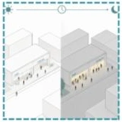
A ampliação do uso noturno está associada à criação de condições para que os espaços públicos e as atividades urbanas permaneçam ativos também após os horários de maior funcionamento dos equipamentos educacionais e institucionais.
Monografia, p. 105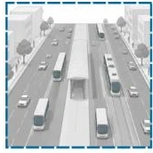
A diretriz de mobilidade integrada busca ampliar as possibilidades de deslocamento no setor por meio da articulação entre diferentes modalidades de transporte, considerando as necessidades dos usuários e as características da infraestrutura existente.
Monografia, p. 106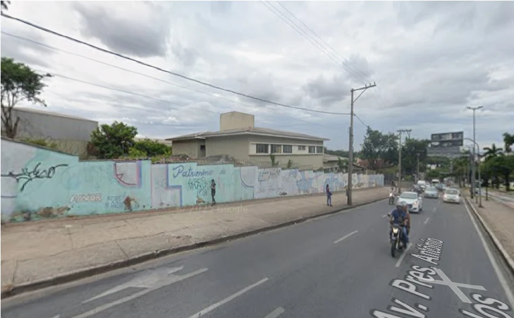
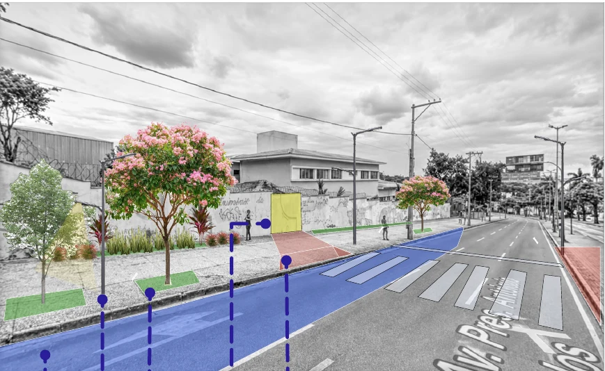
ExistenteProposta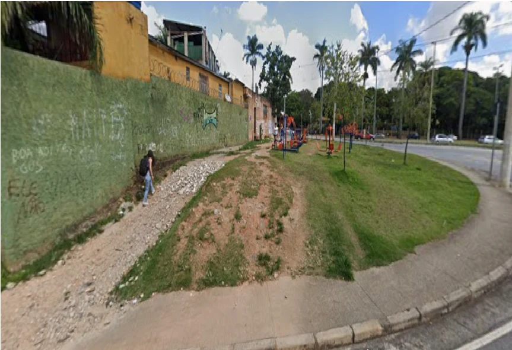
 ExistenteProposta
ExistenteProposta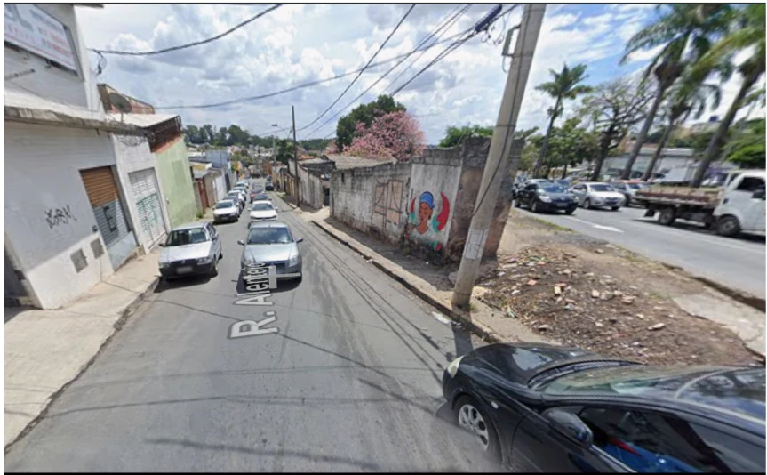
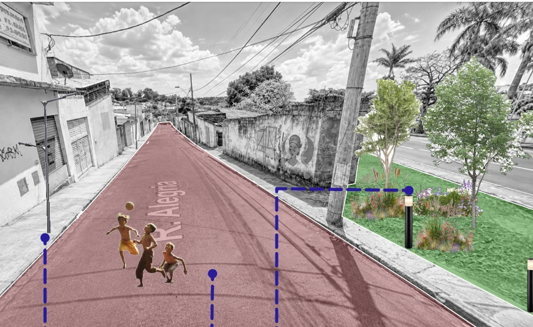
ExistenteProposta
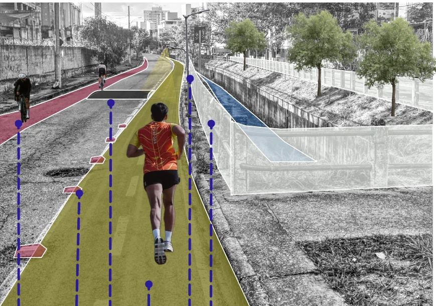
ExistenteProposta
 ExistenteProposta
ExistenteProposta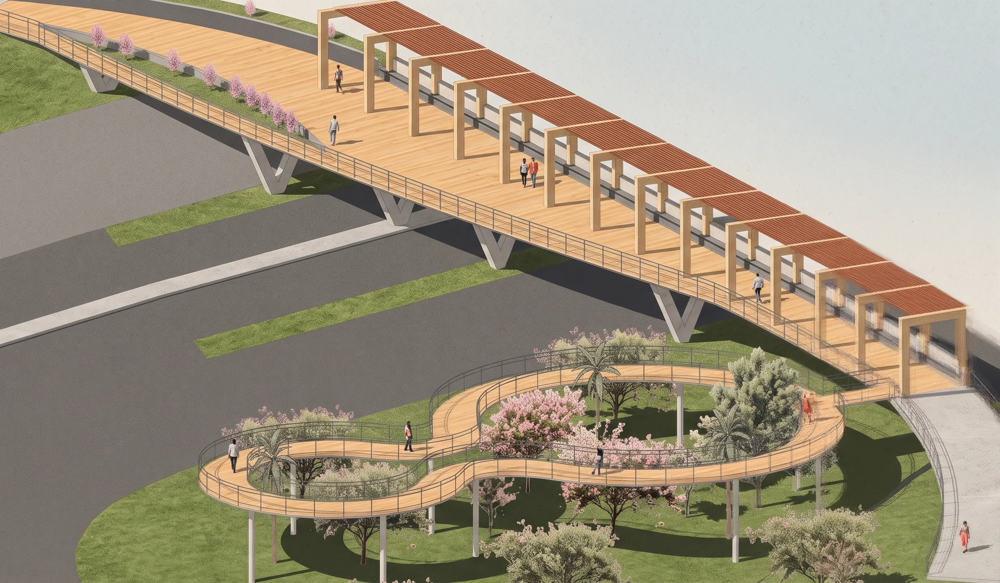
Não foi possível carregar esta vista. Selecione outra imagem ou abra as pranchas completas.
A1 / Viaduto José Alencar
Perspectiva do estudo preliminar fornecido pela autora. Pranchas de projeto, página 7.
A situação atual, estruturada exclusivamente pelo corredor central do MOVE, apresenta a vantagem de manter a infraestrutura já consolidada, evitando novas intervenções de maior porte na avenida.
Ler a comparação na monografiaAcervo atualizado em 20/11/2026
135 páginas / 10,3 MB
Versão de trabalho com comentários de revisão.Abrir PDF ↗Desenvolvimento projetual10 páginas / 34 MB
Implantação, cortes, acessos e perspectivas.Abrir PDF ↗Aplicação das diretrizes5 páginas / 17,3 MB
Situação existente, propostas e mapas-chave.Abrir PDF ↗